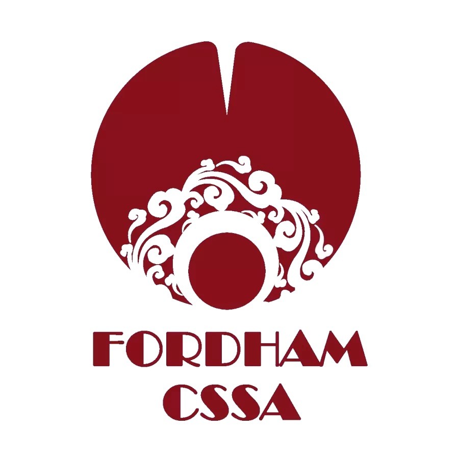
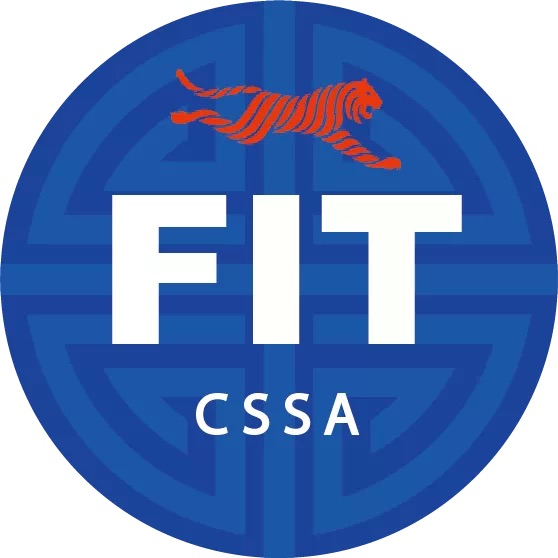
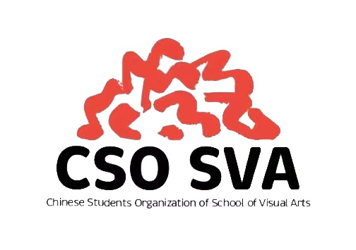

2022
Spring Gala
Fordham CSSA and
The New School CSSA
invite you to join us in creating
a meaningful Spring Lantern Party.
Host Organization
Fordham CSSA X The New School CSSA

Co-organizers
FIT CSSA, Fordham CBS, Pratt CSSA, SVA CSO


Credit to
| Fordham CSSA: Ada 吴佳蔚, Bonnie 蒋濬冰
TNS CSSA: Kyrie 杨涵泳, Mandy 周果蔓